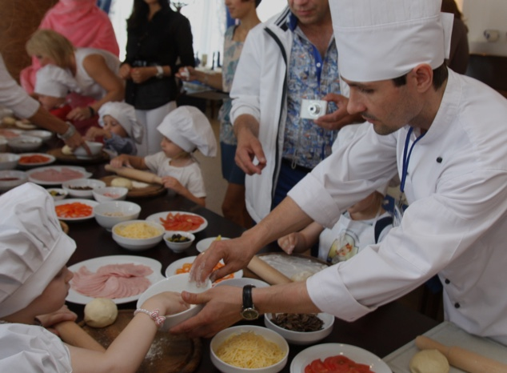
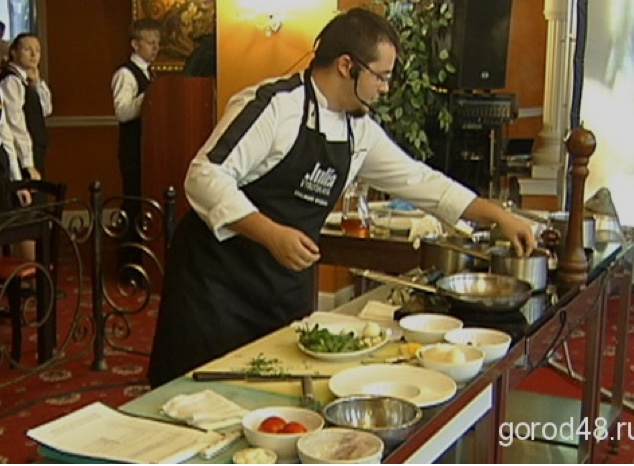

15 сентября исполнилось 2 года «Любимой ферме». В этот день у нас была особая программа.
В прошлом году на расширенном заседании городской и областной администрации было принято решение об оптимальной форме организационно-правового устройства управляющей организации нового Центрального рынка. Им станл кооператив, в состав которого вошли воронежские сельхозпроизводители.
Комментируя это решение, губернатор Воронежской области Алексей Васильевич Гордеев отметил, что Центральный рынок Воронежа должен стать «витриной для местных товаропроизводителей. Это должен быть именно сельскохозяйственный рынок с короткой схемой реализации воронежской продукции в интересах местных потребителей».
Мастер-классы

В прошлом году на расширенном заседании городской и областной администрации было принято решение об оптимальной форме организационно-правового устройства управляющей организации нового Центрального рынка. Им станл кооператив, в состав которого вошли воронежские сельхозпроизводители.
Комментируя это решение, губернатор Воронежской области Алексей Васильевич Гордеев отметил, что Центральный рынок Воронежа должен стать «витриной для местных товаропроизводителей. Это должен быть именно сельскохозяйственный рынок с короткой схемой реализации воронежской продукции в интересах местных потребителей».
Кулинарные шоу

В прошлом году на расширенном заседании городской и областной администрации было принято решение об оптимальной форме организационно-правового устройства управляющей организации нового Центрального рынка. Им станл кооператив, в состав которого вошли воронежские сельхозпроизводители.
Комментируя это решение, губернатор Воронежской области Алексей Васильевич Гордеев отметил, что Центральный рынок Воронежа должен стать «витриной для местных товаропроизводителей. Это должен быть именно сельскохозяйственный рынок с короткой схемой реализации воронежской продукции в интересах местных потребителей».